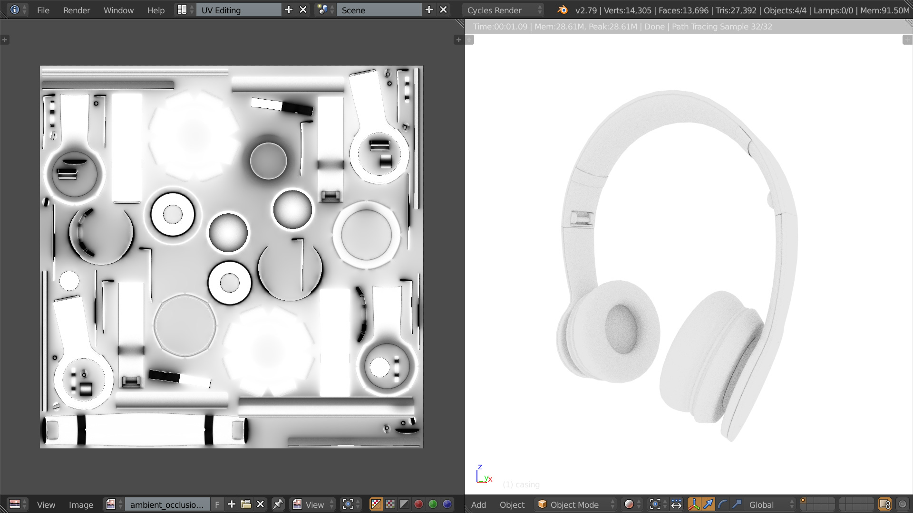

UV Mapping
UV mapping is the processes of creating a 2D map of a 3D surface kind of like peeling an orange and laying it flat on a table. UV coordinates are stored as an attribute just like normals. Our headphones model has UV maps included so we don't need to do anything extra except update our shader to use them.
//VERTEXSHADER
varying vec3 _normal;
varying vec2 _uv;
void main()
{
_normal = normalMatrix * normal;
// Uvs just get passed on to the fragment shader
_uv = uv;
gl_Position = projectionMatrix * modelViewMatrix * vec4(position, 1.0);
}Ambient Occlusion
Remember how everything we're doing is fake? Well another trick is to pre-render all the expensive to calculate shadows that appear in the nooks and crannies of an object and save them to a texture.
There's an ambient occlusion map that's supplied with our 3D model. So all we have to do is load it in and use it in our fragment shader.
function preload()
{
// ...
load_texture('ambient_occlusion', 'img/ambient_occlusion.jpg');
// ...
}
function start()
{
// ...
casing_material.uniforms.ao.value = textures.ambient_occlusion;
// ...
}Here's the updated fragment shader. The ambient occlusion map is a black and white image with all RGB channel having equal values. By multiplying the matcap colour by the ambient occlusion colour we'll darken the result wherever there is shadow.
//FRAGMENTSHADER
varying vec2 _uv;
varying vec3 _normal;
uniform sampler2D matcap;
uniform sampler2D ao;
void main()
{
vec4 N = vec4(normalize(_normal), 0);
vec2 muv = vec2(viewMatrix * N) * 0.5 + vec2(0.5,0.5);
vec3 rgb = texture2D(matcap, muv).rgb;
float ao_sample = texture2D(ao, _uv).r;
rgb *= ao_sample;
gl_FragColor = vec4(rgb, 1.0);
}